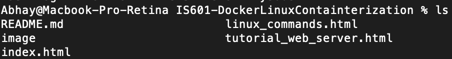
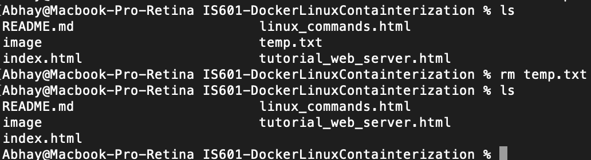
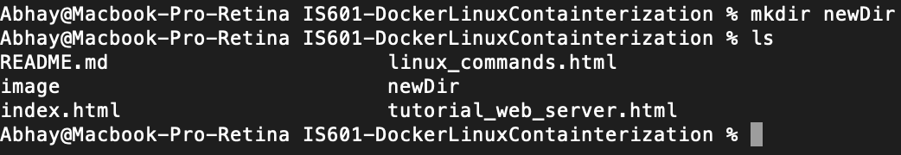
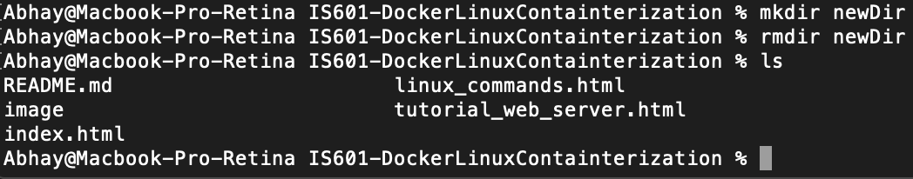

A Brief Overview of Linux Commands
This tutorial is to introduce you to the basics of Linux commands which are useful when using Docker and getting your project
up and running.
- 'ls' - lists the files in the current working directory.
The 'ls -R' command shows all files including subdirectories.

- 'cat' - used to display text files. Used for copying, combining, and/or creating new text files.
To create a new file simply use the following:
- 'cat > filename'
- Add file contents
- Press enter
- The syntax to merge two files using 'cat' command is 'cat file1 file2 > new file'
- rm' - removes any file from the system. To remove a file use the following command: 'rm filename'
and replace filename with the path to the file

- 'mv filename new_file_location' - moves a file to the specified location. Can also rename by using the following syntax: 'mv filename newfilename'
- 'mkdir directoryname' - Create a new subdirectory in the current working directory using this command

- 'mkdir dir1 dir2 dir3' - Use this syntax to create more than one directory at once
- 'rmdir dirname' - Remove a directory using the following command.

- 'mv directoryname newdirectoryname' - Used to rename a directory
- 'history' - Shows all the commands that you have used in the past for the current terminal session. Useful to repeat old commands
- 'clear' - Clears the terminal of all output.